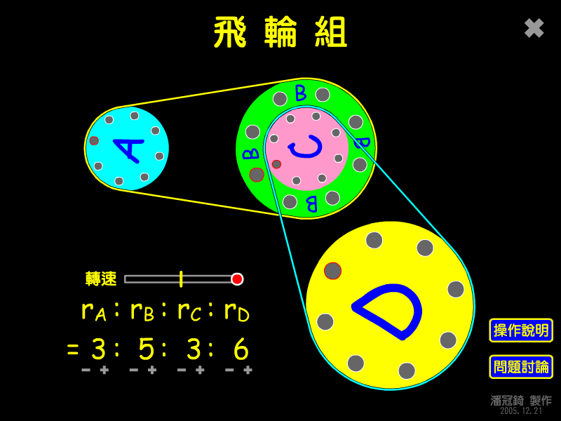

在學習轉動的單元裡，這是一個常常出現的題目： 畫面中A、B輪用黃色皮帶相連，C、D輪用藍色皮帶相連，B、C輪則固定在同一個軸心上， 已知各輪的半徑比，且皮帶與輪之間不會滑動，如果A轉一圈，D會轉幾圈？
提示：仔細觀察，用皮帶相連的輪子，什麼會相同？ 同一軸心的輪子，又是什麼會相同？(角速度？輪邊的速率？)
你可以改變各輪的半徑，也可以調整轉動的速率。

↑動畫截圖。
檔案下載
[PC exe]